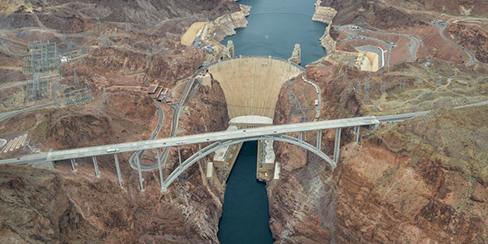
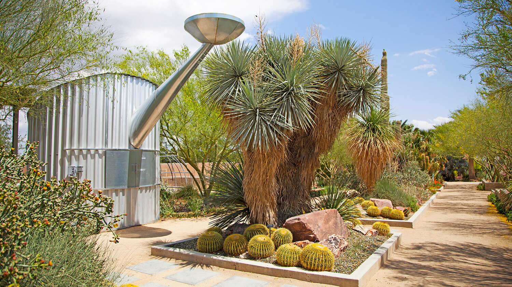
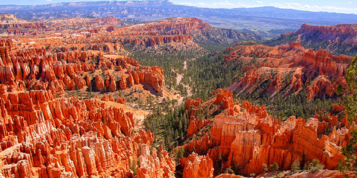

The Strip
Experience the Las Vegas Strip from above aboard a luxurious sightseeing helicopter. You’ll fly over the Strip and Downtown Las Vegas and have an opportunity to see all the neon lights that make Sin City famous! This is the most impressive and memorable way to view Las Vegas!
Heath Care
Look for the new plan offered!
Las Vegas Natural Tourist Spots
Srings resuerve, Red rock, Hoover Dam
Srings resuerve
The Springs Preserve features museums, galleries, outdoor events, a colorful botanical garden and an interpretive trail system that meanders through a scenic wetland habitat.
Red rock
The great sandstone cliffs at Red Rock, thousands of feet high, are made up of the Aztec Sandstone. This formation, about 180 - 190 million years old, is comprised of lithified sand dunes that formed in a vast desert that covered a large part of the southwestern United States during the Jurassic time.
Demographic
Out of the total population in Las Vegas, 62.2% are White alone, 12.2% are Black or African American, 0.9% are American Indian and Alaska Native, 6.6% are Asians, 0.8% are Native Hawaiian and Other Pacific Islander, 32.9% are Hispanic.